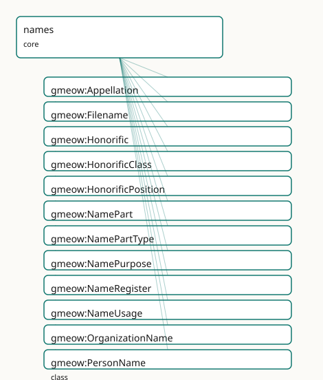

GMEOW Names Module
- IRI: https://blackcatinformatics.ca/gmeow/slices/names
- Tier: core
Group: core
What This Slice Covers
This slice owns 154 terms and contributes 228 mapping or projection rows. Use it when its terms match the native fact you want to preserve; use the linkage tables to see how those facts leave GMEOW for consumer vocabularies.
Dependencies
gmeow:slices/agreementsgmeow:slices/contactsgmeow:slices/entitiesgmeow:slices/eventsgmeow:slices/kernelgmeow:slices/languagegmeow:slices/observationsgmeow:slices/placesgmeow:slices/temporal
Consumers
- Every named entity (P9 anti-colonial naming); the mail corpus; display-safety projections.
Local Map

Examples
Person Names
- Source:
slices/core/names/examples/person-names.ttl - GMEOW terms:
gmeow:NamePart,gmeow:NameUsage,gmeow:Person,gmeow:PersonName,gmeow:displayable,gmeow:fullName,gmeow:hasName,gmeow:hasNamePart,gmeow:hasPronounSet,gmeow:namePartGiven
# SPDX-FileCopyrightText: 2026 Blackcat Informatics® Inc. <paudley@blackcatinformatics.ca>
# SPDX-License-Identifier: CC-BY-4.0
#
# Worked example: names as reified, perspectival appellations . One person
# carries several PersonNames at once — a chosen legal name decomposed into
# parts, a superseded deadname kept but flagged non-displayable (P10:
# suppression, never deletion), and a Han-script form. A NameUsage relator
# records that close friends call them "Rob" in a familiar register — a usage is
# always SOMEONE's, never a global "preferred name" (P9). Pronouns ride the
# person, not any one name.
@prefix gmeow: <https://blackcatinformatics.ca/gmeow/> .
@prefix ex: <https://blackcatinformatics.ca/gmeow/examples/names/> .
@prefix rdfs: <http://www.w3.org/2000/01/rdf-schema#> .
ex:robin a gmeow:Person ;
gmeow:hasName ex:nameChosen , ex:nameDead , ex:nameHan , ex:nickRob ;
gmeow:hasPronounSet gmeow:pronounTheyThem .
# --- The chosen legal name, decomposed into ordered parts (displayable).
ex:nameChosen a gmeow:PersonName ;
gmeow:fullName "Robin Avery Chen"@en ;
gmeow:namePurpose gmeow:namePurposeChosen ;
gmeow:displayable true ;
gmeow:hasNamePart ex:partGiven , ex:partMiddle , ex:partSurname .
ex:partGiven a gmeow:NamePart ;
gmeow:namePartType gmeow:namePartGiven ; gmeow:partText "Robin" ; gmeow:partOrder 0 .
ex:partMiddle a gmeow:NamePart ;
gmeow:namePartType gmeow:namePartMiddle ; gmeow:partText "Avery" ; gmeow:partOrder 1 .
ex:partSurname a gmeow:NamePart ;
gmeow:namePartType gmeow:namePartSurname ; gmeow:partText "Chen" ; gmeow:partOrder 2 .
# --- The superseded deadname: RETAINED (the record stays auditable) but
# displayable false, so no projection ever surfaces it (P10).
ex:nameDead a gmeow:PersonName ;
gmeow:fullName "Jordan Chen"@en ;
gmeow:namePurpose gmeow:namePurposeDeadname ;
gmeow:displayable false .
# --- A Han-script form, co-equal with the Latin one — no privileged "main" name.
ex:nameHan a gmeow:PersonName ;
gmeow:fullName "陳"@und ;
gmeow:namePurpose gmeow:namePurposeLegal ;
gmeow:displayable true .
# --- A perspectival NameUsage: among close friends, in a familiar register, this
# person is called "Rob". The nickname is its own Appellation.
ex:nickRob a gmeow:PersonName ;
gmeow:fullName "Rob"@en ;
gmeow:namePurpose gmeow:namePurposeNickname ;
gmeow:displayable true .
ex:usageRobFriends a gmeow:NameUsage ;
gmeow:usageNamed ex:robin ;
gmeow:usageAppellation ex:nickRob ;
gmeow:usageRegister gmeow:registerIntimate .
Terms
Classes
| Term | Label | Definition |
|---|---|---|
gmeow:Appellation |
Appellation | A name as an information object borne by an entity — a person's name, a filename, a place name, an organization name. It carries the surface form (gmeow:fullNa... |
gmeow:Filename |
Filename | An appellation borne by a digital file — a stem and an extension. The extension CLAIMS a content type (gmeow:claimedMediaType) which may disagree with the type... |
gmeow:Honorific |
Honorific | A title or form of address (Mr, Mx, Dr, -san, Sri, Sayyid, …). A value, not a subclass. Each carries a gmeow:honorificPosition (prefix/suffix) and, where appli... |
gmeow:HonorificClass |
Honorific Class | The domain of an honorific (academic, clerical, noble, military, judicial, social). |
gmeow:HonorificPosition |
Honorific Position | Whether an honorific is rendered before (prefix) or after (suffix) the name. |
gmeow:NamePart |
Name Part | A reified component of a structured appellation — a given name, a surname, a patronymic, a nobiliary particle, an Arabic nisba, a filename extension. Its kind... |
gmeow:NamePartType |
Name Part Type | The kind of a name part (given, surname, patronymic, particle, Arabic nisba, filename extension, …). A value, not a NamePart subclass: naming systems worldwide... |
gmeow:NamePurpose |
Name Purpose | The purpose/kind of a whole appellation (legal, birth, chosen, professional, deadname, …). A value, not a PersonName subclass; a person may simultaneously bear... |
gmeow:NameRegister |
Name Register | The social register of a name-usage (formal, intimate, professional, casual) — the naming specialization of the gmeow:Register umbrella: a name register... |
gmeow:NameUsage |
Name Usage | A reified, context-dependent use of an appellation — an observation in the universal claim stack: a named entity (observedFeature) is called by a given a... |
gmeow:OrganizationName |
Organization Name | An appellation borne by an organization — a legal name, a trading / 'doing-business-as' name, or a former name. |
gmeow:PersonName |
Person Name | A structured, typed name borne by a person — birth name, married name, chosen name, alias, religious name — with ordered, typed name parts, an optional honorif... |
gmeow:PlaceName |
Place Name | An appellation (toponym) borne by a geographic place via gmeow:hasPlaceName — possibly endonym/exonym (gmeow:namePurpose), multilingual, or historical (held ov... |
gmeow:PlaceNaming |
Place Naming | A DEFINED specialization of gmeow:NameUsage whose named entity is a gmeow:Place — a time/audience/register-scoped use of a toponym. Defined, NOT asserted: any... |
gmeow:PronounSet |
Pronoun Set | A set of third-person pronouns a person goes by, in the five English forms (subject, object, possessive determiner, possessive pronoun, reflexive). Sex/gender... |
gmeow:Register |
Register | A social or expressive register — the formality, intimacy, or audience-posture of an expression act (EPIC). The OPEN umbrella vocabulary that name r... |
Properties
| Term | Label | Definition |
|---|---|---|
gmeow:claimedMediaType |
claimed media type | The MIME media type CLAIMED by a filename's extension (e.g. ".pdf" → "application/pdf"). A claim by the name, which may disagree with gmeow:detectedMediaType.... |
gmeow:conferredByEvent |
conferred by event | The life event that conferred or changed an appellation — a gmeow:LifeEvent carrying a gmeow:eventType such as gmeow:eventTypeChristening, gmeow:eventTypeNameC... |
gmeow:detectedMediaType |
detected media type | The MIME media type DETECTED from the bytes/magic of an information object (the observed type). May disagree with a filename's gmeow:claimedMediaType — a misma... |
gmeow:displayable |
displayable | Whether a name or identity facet may be shown in interfaces and reports. The ONLY display control in the model — across naming (gmeow:Appellation) and identity... |
gmeow:fullName |
full name | The complete surface form of an appellation as a single string, in the natural order of its culture (language-/script-tag the literal, e.g. "山田太郎"@ja, "Yamada... |
gmeow:hasAgreementName |
has agreement name | Relates an agreement to a structured gmeow:AgreementName it bears; the agreement-scoped specialization of gmeow:hasAppellation. Non-functional — an agreement m... |
gmeow:hasAppellation |
has appellation | Relates an entity to an appellation (name-object) it bears. The universal name-bearing property; gmeow:hasName is the person-scoped specialization. Non-functio... |
gmeow:hasName |
has name | Relates a person to a structured, typed PersonName they bear; the person-scoped specialization of gmeow:hasAppellation. Non-functional — a person bears many co... |
gmeow:hasNamePart |
has name part | Relates an appellation to one of its reified, typed parts. Non-functional — a name has many parts. A specialized information-object component relation under th... |
gmeow:hasOrganizationName |
has organization name | Relates an organization to a structured gmeow:OrganizationName it bears; the organization-scoped specialization of gmeow:hasAppellation, mirroring gmeow:hasNam... |
gmeow:hasPlaceName |
has place name | Relates a geographic gmeow:Place to a structured gmeow:PlaceName (toponym) it bears; the place-scoped specialization of gmeow:hasAppellation, mirroring gmeow:h... |
gmeow:hasPronounSet |
has pronoun set | Relates a person to a pronoun set they go by. Non-functional and contextual (scope a context-specific set with gmeow:validFrom/validUntil on the statement, or... |
gmeow:honorific |
honorific | An honorific/title of address for a person (a gmeow:Honorific value). Non-functional and contextual. A form of ADDRESS, sex/gender-independent — MUST NOT be in... |
gmeow:honorificClass |
honorific class | The domain/class of an honorific (academic, clerical, noble, military, judicial, social). |
gmeow:honorificPosition |
honorific position | Whether an honorific is rendered before (prefix) or after (suffix) the name. |
gmeow:nameLanguage |
name language | The first-class gmeow:Language an appellation's surface form is in. Language is ALWAYS a first-class gmeow:Language (registry-INDEPENDENT, self-minted IRI) — n... |
gmeow:namePartType |
name part type | The kind of a name part (a gmeow:NamePartType value). Functional: a single part has one kind — a part that is both a surname and a patronymic is modelled as tw... |
gmeow:namePurpose |
name purpose | The intrinsic kind/purpose(s) of an appellation (legal, birth, chosen, professional, deadname, …) — a gmeow:NamePurpose value. Non-functional: a name may be bo... |
gmeow:nameScript |
name script | The ISO 15924 script code of an appellation (e.g. "Hani", "Arab", "Latn"). Available explicitly for indexing alongside a BCP-47 script subtag on the literal. |
gmeow:partExpansion |
part expansion | The expanded form of an abbreviated part — e.g. the full word a South-Indian (Tamil) initial stands for. |
gmeow:partOrder |
part order | The 0-based position of a part within its appellation's surface order, as actually written in its culture. Records observed order WITHOUT implying a given-befo... |
gmeow:partText |
part text | The string value of a name part. Language-/script-tag the literal where applicable. |
gmeow:pronounObject |
pronoun object | The object (accusative) form of a pronoun set, e.g. "her", "them", "xem". |
gmeow:pronounPossessive |
pronoun possessive | The possessive pronoun form of a pronoun set, e.g. "hers", "theirs", "xyrs". |
gmeow:pronounPossessiveDeterminer |
pronoun possessive determiner | The possessive determiner form of a pronoun set, e.g. "her", "their", "xyr". |
gmeow:pronounReflexive |
pronoun reflexive | The reflexive form of a pronoun set, e.g. "herself", "themself", "xemself". |
gmeow:pronounSubject |
pronoun subject | The subject (nominative) form of a pronoun set, e.g. "she", "they", "xe". |
gmeow:romanization |
romanization | A Latin-script transliteration of THIS SAME appellation in another script (e.g. "Yamada Tarō" for "山田太郎"; pinyin for a Chinese name). Strictly a transliteratio... |
gmeow:usageAppellation |
usage appellation | The appellation used to call the named entity in a name-usage. |
gmeow:usageAudience |
usage audience | The audience or scope in which the appellation is used — an Agent, a Group/Family, or a locale community. Range is gmeow:Entity to admit all of them. Non-funct... |
gmeow:usageAuthority |
usage authority | The naming / toponymic authority behind a name-usage — the gmeow:Agent (a national mapping agency, a standards body, an indigenous community, or a self-asserti... |
gmeow:usageInterval |
usage interval | The time interval over which a name-usage held. (A relator carries its period this way — matching contacts' relationshipInterval — rather than via duringInterv... |
gmeow:usageNamed |
usage named | The entity that is called by the appellation in a name-usage. |
gmeow:usageNamer |
usage namer | An agent who uses the appellation for the named entity — the speaker/perspective holder. Non-functional: a usage may be shared by an audience of agents. |
gmeow:usageRegister |
usage register | The social register of a name-usage (formal, intimate, professional, casual) — a gmeow:NameRegister value individual. |
gmeow:usageRelationshipScope |
usage relationship scope | The interpersonal relationship that scopes a name-usage (e.g. the aunt-niece tie within which 'Aunt Genny' is used) — reuses the contacts relator. A sharper al... |
Individuals
| Term | Label | Definition |
|---|---|---|
gmeow:honorificClassAcademic |
academic | The academic honorific class — a broad social or institutional domain from which honorifics are drawn. |
gmeow:honorificClassClerical |
clerical | The clerical honorific class — a broad social or institutional domain from which honorifics are drawn. |
gmeow:honorificClassJudicial |
judicial | The judicial honorific class — a broad social or institutional domain from which honorifics are drawn. |
gmeow:honorificClassMilitary |
military | The military honorific class — a broad social or institutional domain from which honorifics are drawn. |
gmeow:honorificClassNoble |
noble | The noble honorific class — a broad social or institutional domain from which honorifics are drawn. |
gmeow:honorificClassSocial |
social | The social honorific class — a broad social or institutional domain from which honorifics are drawn. |
gmeow:honorificDame |
Dame | The dame honorific — a term of respect, rank, or courtesy used when addressing or naming a person. |
gmeow:honorificDr |
Dr | The dr honorific — a term of respect, rank, or courtesy used when addressing or naming a person. |
gmeow:honorificHon |
Hon | The hon honorific — a term of respect, rank, or courtesy used when addressing or naming a person. |
gmeow:honorificLady |
Lady | The lady honorific — a term of respect, rank, or courtesy used when addressing or naming a person. |
gmeow:honorificLord |
Lord | The lord honorific — a term of respect, rank, or courtesy used when addressing or naming a person. |
gmeow:honorificMr |
Mr | The mr honorific — a term of respect, rank, or courtesy used when addressing or naming a person. |
gmeow:honorificMrs |
Mrs | The mrs honorific — a term of respect, rank, or courtesy used when addressing or naming a person. |
gmeow:honorificMs |
Ms | The ms honorific — a term of respect, rank, or courtesy used when addressing or naming a person. |
gmeow:honorificMx |
Mx | The mx honorific — a term of respect, rank, or courtesy used when addressing or naming a person. |
gmeow:honorificPositionPrefix |
prefix | The prefix honorific position — a position in a name string where an honorific appears. |
gmeow:honorificPositionSuffix |
suffix | The suffix honorific position — a position in a name string where an honorific appears. |
gmeow:honorificProf |
Prof | The prof honorific — a term of respect, rank, or courtesy used when addressing or naming a person. |
gmeow:honorificRev |
Rev | The rev honorific — a term of respect, rank, or courtesy used when addressing or naming a person. |
gmeow:honorificSama |
-sama | The sama honorific — a term of respect, rank, or courtesy used when addressing or naming a person. |
gmeow:honorificSan |
-san | The san honorific — a term of respect, rank, or courtesy used when addressing or naming a person. |
gmeow:honorificSayyid |
Sayyid | The sayyid honorific — a term of respect, rank, or courtesy used when addressing or naming a person. |
gmeow:honorificSir |
Sir | The sir honorific — a term of respect, rank, or courtesy used when addressing or naming a person. |
gmeow:honorificSmt |
Smt (Srimati) | The smt honorific — a term of respect, rank, or courtesy used when addressing or naming a person. |
gmeow:honorificSri |
Sri | The sri honorific — a term of respect, rank, or courtesy used when addressing or naming a person. |
gmeow:namePartAgnomen |
agnomen (Roman earned epithet) | The agnomen name part type — a kind of component that can appear in a personal or organizational appellation. |
gmeow:namePartBirthOrderName |
birth-order / day name | The birth order name name part type — a kind of component that can appear in a personal or organizational appellation. |
gmeow:namePartBirthSurname |
birth surname / maiden name | The birth surname name part type — a kind of component that can appear in a personal or organizational appellation. |
gmeow:namePartClanName |
clan / lineage name | The clan name name part type — a kind of component that can appear in a personal or organizational appellation. |
gmeow:namePartCognomen |
cognomen (Roman family branch) | The cognomen name part type — a kind of component that can appear in a personal or organizational appellation. |
gmeow:namePartCourtesyName |
courtesy / art name | The courtesy name name part type — a kind of component that can appear in a personal or organizational appellation. |
gmeow:namePartExtension |
filename extension | The extension name part type — a kind of component that can appear in a personal or organizational appellation. |
gmeow:namePartGenerationName |
generation name (East-Asian lineage marker) | The generation name name part type — a kind of component that can appear in a personal or organizational appellation. |
gmeow:namePartGenerationalOrdinal |
generational ordinal (III / 'the Third') | The generational ordinal name part type — a kind of component that can appear in a personal or organizational appellation. |
gmeow:namePartGenerationalSuffix |
generational suffix (Jr / Sr) | The generational suffix name part type — a kind of component that can appear in a personal or organizational appellation. |
gmeow:namePartGiven |
given name | The given name part type — a kind of component that can appear in a personal or organizational appellation. |
gmeow:namePartHonorificPrefix |
honorific prefix | The honorific prefix name part type — a kind of component that can appear in a personal or organizational appellation. |
gmeow:namePartHonorificSuffix |
honorific suffix | The honorific suffix name part type — a kind of component that can appear in a personal or organizational appellation. |
gmeow:namePartHouseName |
house / estate name | The house name name part type — a kind of component that can appear in a personal or organizational appellation. |
gmeow:namePartInitial |
expandable initial | The initial name part type — a kind of component that can appear in a personal or organizational appellation. |
gmeow:namePartIsm |
ism (Arabic personal name) | The ism name part type — a kind of component that can appear in a personal or organizational appellation. |
gmeow:namePartKunya |
kunya (Arabic teknonym) | The kunya name part type — a kind of component that can appear in a personal or organizational appellation. |
gmeow:namePartLaqab |
laqab (Arabic epithet) | The laqab name part type — a kind of component that can appear in a personal or organizational appellation. |
gmeow:namePartMaternalSurname |
maternal surname | The maternal surname name part type — a kind of component that can appear in a personal or organizational appellation. |
gmeow:namePartMatronymic |
matronymic | The matronymic name part type — a kind of component that can appear in a personal or organizational appellation. |
gmeow:namePartMiddle |
middle / additional name | The middle name part type — a kind of component that can appear in a personal or organizational appellation. |
gmeow:namePartMononym |
mononym | The mononym name part type — a kind of component that can appear in a personal or organizational appellation. |
gmeow:namePartNasab |
nasab (Arabic patronymic lineage) | The nasab name part type — a kind of component that can appear in a personal or organizational appellation. |
gmeow:namePartNickname |
nickname / hypocorism | The nickname name part type — a kind of component that can appear in a personal or organizational appellation. |
gmeow:namePartNisba |
nisba (Arabic origin / affiliation name) | The nisba name part type — a kind of component that can appear in a personal or organizational appellation. |
gmeow:namePartNomen |
nomen (Roman gens / clan name) | The nomen name part type — a kind of component that can appear in a personal or organizational appellation. |
gmeow:namePartParticle |
nobiliary / nominal particle | The particle name part type — a kind of component that can appear in a personal or organizational appellation. |
gmeow:namePartPaternalSurname |
paternal surname | The paternal surname name part type — a kind of component that can appear in a personal or organizational appellation. |
gmeow:namePartPatronymic |
patronymic | The patronymic name part type — a kind of component that can appear in a personal or organizational appellation. |
gmeow:namePartPraenomen |
praenomen (Roman personal name) | The praenomen name part type — a kind of component that can appear in a personal or organizational appellation. |
gmeow:namePartReligiousName |
religious / regnal name | The religious name name part type — a kind of component that can appear in a personal or organizational appellation. |
gmeow:namePartStem |
filename stem | The stem name part type — a kind of component that can appear in a personal or organizational appellation. |
gmeow:namePartSurname |
surname / family name | The surname name part type — a kind of component that can appear in a personal or organizational appellation. |
gmeow:namePartTeknonym |
teknonym (parent-of name) | The teknonym name part type — a kind of component that can appear in a personal or organizational appellation. |
gmeow:namePurposeBirth |
birth name | The birth name purpose — a role that a particular appellation plays in the life of its bearer. |
gmeow:namePurposeCeremonial |
ceremonial name | The ceremonial name purpose — a role that a particular appellation plays in the life of its bearer. |
gmeow:namePurposeChosen |
chosen / self-identified name | The chosen name purpose — a role that a particular appellation plays in the life of its bearer. |
gmeow:namePurposeDeadname |
deadname (historical, do-not-display) | The deadname name purpose — a role that a particular appellation plays in the life of its bearer. |
gmeow:namePurposeEndonym |
endonym (name used by a place's own inhabitants / a language's own speakers) | The endonym name purpose — a role that a particular appellation plays in the life of its bearer. |
gmeow:namePurposeExonym |
exonym (name used by outsiders / in another language) | The exonym name purpose — a role that a particular appellation plays in the life of its bearer. |
gmeow:namePurposeGlossonym |
glossonym (name of a language) | The glossonym name purpose — a role that a particular appellation plays in the life of its bearer. |
gmeow:namePurposeLegal |
legal name | The legal name purpose — a role that a particular appellation plays in the life of its bearer. |
gmeow:namePurposeNickname |
nickname / familiar name | The nickname name purpose — a role that a particular appellation plays in the life of its bearer. |
gmeow:namePurposeOnlineHandle |
online handle / username | The online handle name purpose — a role that a particular appellation plays in the life of its bearer. |
gmeow:namePurposePenStage |
pen / stage name | The pen stage name purpose — a role that a particular appellation plays in the life of its bearer. |
gmeow:namePurposeProfessional |
professional name | The professional name purpose — a role that a particular appellation plays in the life of its bearer. |
gmeow:namePurposeRegnal |
regnal name | The regnal name purpose — a role that a particular appellation plays in the life of its bearer. |
gmeow:namePurposeReligious |
religious name | The religious name purpose — a role that a particular appellation plays in the life of its bearer. |
gmeow:namePurposeSuperseded |
superseded / former name | The superseded name purpose — a role that a particular appellation plays in the life of its bearer. |
gmeow:pronounAeAer |
ae/aer | The ae/aer pronoun set — a third-person pronoun paradigm used to refer to an entity in discourse. |
gmeow:pronounAny |
any pronouns | A non-specifying pronoun stance indicating that any third-person pronoun set is acceptable when referring to the entity. |
gmeow:pronounAsk |
ask me | A non-specifying pronoun stance indicating that the speaker or writer should ask the entity which pronouns to use. |
gmeow:pronounCoCos |
co/cos | The co/cos pronoun set — a third-person pronoun paradigm used to refer to an entity in discourse. |
gmeow:pronounEEm |
e/em (Spivak) | The e/em pronoun set — a third-person pronoun paradigm used to refer to an entity in discourse. |
gmeow:pronounEyEm |
ey/em (Elverson) | The ey/em pronoun set — a third-person pronoun paradigm used to refer to an entity in discourse. |
gmeow:pronounFaeFaer |
fae/faer | The fae/faer pronoun set — a third-person pronoun paradigm used to refer to an entity in discourse. |
gmeow:pronounHeHim |
he/him | The he/him pronoun set — a third-person pronoun paradigm used to refer to an entity in discourse. |
gmeow:pronounHuHum |
hu/hum | The hu/hum pronoun set — a third-person pronoun paradigm used to refer to an entity in discourse. |
gmeow:pronounItIts |
it/its | The it/its pronoun set — a third-person pronoun paradigm used to refer to an entity in discourse. |
gmeow:pronounKiKin |
ki/kin | The ki/kin pronoun set — a third-person pronoun paradigm used to refer to an entity in discourse. |
gmeow:pronounNameOnly |
use my name (no pronouns) | A non-specifying pronoun stance indicating that the entity prefers no third-person pronouns and requests that their name be used in place of any pronoun. |
gmeow:pronounNeNem |
ne/nem | The ne/nem pronoun set — a third-person pronoun paradigm used to refer to an entity in discourse. |
gmeow:pronounOneOne |
one/one (generic) | The one/one pronoun set — a third-person pronoun paradigm used to refer to an entity in discourse. |
gmeow:pronounPerPer |
per/per | The per/per pronoun set — a third-person pronoun paradigm used to refer to an entity in discourse. |
gmeow:pronounSheHer |
she/her | The she/her pronoun set — a third-person pronoun paradigm used to refer to an entity in discourse. |
gmeow:pronounTheyThem |
they/them (singular) | The they/them pronoun set — a third-person pronoun paradigm used to refer to an entity in discourse. |
gmeow:pronounThonThon |
thon/thon | The thon/thon pronoun set — a third-person pronoun paradigm used to refer to an entity in discourse. |
gmeow:pronounVeVer |
ve/ver | The ve/ver pronoun set — a third-person pronoun paradigm used to refer to an entity in discourse. |
gmeow:pronounViVir |
vi/vir | The vi/vir pronoun set — a third-person pronoun paradigm used to refer to an entity in discourse. |
gmeow:pronounXeXem |
xe/xem | The xe/xem pronoun set — a third-person pronoun paradigm used to refer to an entity in discourse. |
gmeow:pronounZeHir |
ze/hir | The ze/hir pronoun set — a third-person pronoun paradigm used to refer to an entity in discourse. |
gmeow:pronounZeZir |
ze/zir | The ze/zir pronoun set — a third-person pronoun paradigm used to refer to an entity in discourse. |
gmeow:pronounZheZher |
zhe/zher | The zhe/zher pronoun set — a third-person pronoun paradigm used to refer to an entity in discourse. |
gmeow:registerCasual |
casual | The casual name register — a level of formality or social distance at which a name is used. |
gmeow:registerFormal |
formal | The formal name register — a level of formality or social distance at which a name is used. |
gmeow:registerIntimate |
intimate / familial | The intimate name register — a level of formality or social distance at which a name is used. |
gmeow:registerProfessional |
professional | The professional name register — a level of formality or social distance at which a name is used. |
Linkages
- Rows: 228
- Projection profiles:
activitystreams,codemeta,dcterms,doap,foaf,geosparql,ical,iiif,mailmap,markdown,oai_dc,ontolex,qb,schema-org,sosa,vcard,web-annotation - External vocabularies:
as,codemeta,crm,dc,dcterms,doap,foaf,geo,gn,gx,gxv,ical,iiif,lime,oa,ontolex,pleiades,qb,rdf,schema,sosa,vcard,vcardx,wd,wdt
| Source | Kind | Profile | Predicate/Relation | Target | Evidence |
|---|---|---|---|---|---|
gmeow:Appellation |
equivalence | - |
rdfs:subClassOf | ontolex:LexicalEntry | gmeow-names.sssom.tsv; gmeow:eqNames042; confidence 0.9 |
gmeow:NameUsage |
equivalence | - |
skos:closeMatch | sosa:Observation | gmeow-observations.sssom.tsv; gmeow:eqObs021; confidence 0.85 |
gmeow:PersonName |
equivalence | - |
skos:closeMatch | gx:Name | gmeow-names.sssom.tsv; gmeow:eqNames005; confidence 0.8 |
gmeow:PersonName |
equivalence | - |
skos:closeMatch | gxv:Name | gmeow-genealogy.sssom.tsv; gmeow:eqGenealogy050; confidence 0.9 |
gmeow:PlaceName |
equivalence | - |
skos:closeMatch | crm:E48_Place_Name | gmeow-names.sssom.tsv; gmeow:eqNames034; confidence 0.85 |
gmeow:PlaceNaming |
equivalence | - |
skos:closeMatch | crm:E41_Appellation | gmeow-places.sssom.tsv; gmeow:eqPlaces070; confidence 0.8 |
gmeow:PronounSet |
equivalence | - |
skos:broadMatch | wd:Q36224 | gmeow-names.sssom.tsv; gmeow:eqNames033; confidence 0.5 |
gmeow:PronounSet |
equivalence | - |
skos:closeMatch | wd:Q65067284 | gmeow-names.sssom.tsv; gmeow:eqNames031; confidence 0.9 |
gmeow:fullName |
equivalence | - |
skos:closeMatch | foaf:name | gmeow-names.sssom.tsv; gmeow:eqNames003; confidence 0.8 |
gmeow:fullName |
equivalence | - |
skos:closeMatch | ontolex:writtenRep | gmeow-names.sssom.tsv; gmeow:eqNames044; confidence 0.85 |
gmeow:fullName |
equivalence | - |
skos:closeMatch | schema:name | gmeow-names.sssom.tsv; gmeow:eqNames001; confidence 0.8 |
gmeow:fullName |
equivalence | - |
skos:closeMatch | vcard:fn | gmeow-names.sssom.tsv; gmeow:eqNames002; confidence 0.9 |
gmeow:fullName |
equivalence | - |
skos:closeMatch | wdt:P1559 | gmeow-names.sssom.tsv; gmeow:eqNames004; confidence 0.7 |
gmeow:hasAgreementName |
equivalence | - |
skos:broadMatch | schema:name | gmeow-names.sssom.tsv; gmeow:eqNames054; confidence 0.6 |
gmeow:hasNamePart |
equivalence | - |
skos:closeMatch | gx:nameForm | gmeow-names.sssom.tsv; gmeow:eqNames006; confidence 0.6 |
gmeow:hasOrganizationName |
equivalence | - |
skos:broadMatch | foaf:name | gmeow-names.sssom.tsv; gmeow:eqNames047; confidence 0.6 |
gmeow:hasOrganizationName |
equivalence | - |
skos:broadMatch | schema:name | gmeow-names.sssom.tsv; gmeow:eqNames045; confidence 0.6 |
gmeow:hasOrganizationName |
equivalence | - |
skos:broadMatch | vcard:organization-name | gmeow-names.sssom.tsv; gmeow:eqNames046; confidence 0.7 |
gmeow:hasPlaceName |
equivalence | - |
skos:broadMatch | gn:name | gmeow-names.sssom.tsv; gmeow:eqNames035; confidence 0.6 |
gmeow:hasPlaceName |
equivalence | - |
skos:closeMatch | pleiades:Name | gmeow-places.sssom.tsv; gmeow:eqPlaces073; confidence 0.8 |
gmeow:hasPlaceName |
equivalence | - |
skos:broadMatch | schema:name | gmeow-names.sssom.tsv; gmeow:eqNames036; confidence 0.5 |
gmeow:hasPronounSet |
equivalence | - |
skos:closeMatch | wdt:P6553 | gmeow-names.sssom.tsv; gmeow:eqNames032; confidence 0.85 |
gmeow:honorific |
equivalence | - |
skos:closeMatch | schema:honorificPrefix | gmeow-names.sssom.tsv; gmeow:eqNames027; confidence 0.7 |
gmeow:honorific |
equivalence | - |
skos:closeMatch | wdt:P511 | gmeow-names.sssom.tsv; gmeow:eqNames028; confidence 0.8 |
| ... | ... | ... | ... | ... | 204 more rows |
Guide
Names — modelling & interoperability guide
Most data models treat a name as an attribute of a thing:
person.familyName = "Smith". That single assumption fails the moment a name
changes (marriage, divorce, transition), is context-dependent (Aunt Genny
to family, Mrs Smith to students), carries facets (pronouns, honorifics), or
belongs to a non-person that can lie about itself (a .pdf that isn't a
PDF). GMEOW therefore models a name as a reified, time-bounded, context-scoped,
source-attributed relationship — never a bare property.
This guide is longer than most because the model is deliberately non-standard. That non-standardness is the point: standard name models encode assumptions that are, at best, parochial and, at worst, harmful.
The reframe
| Real-world fact | What a flat familyName cannot express |
GMEOW axis |
|---|---|---|
| Karen Anne Alpha → Karen Beta → Charles Alpha | a name is not stable | time |
| Aunt Genny vs Mrs Smith | a name is not universal | context / audience |
| names travel with pronouns & titles | a name is not just a string | facets |
invoice.pdf is actually a ZIP |
names aren't only for people, and can be wrong | scope + claim-vs-reality |
| Patrick Colm Audley and 欧德理 | a person has co-equal names in different scripts | co-equality |
Two classes carry the whole model:
gmeow:Appellation(anInformationObject) — the name as an object: its surface form (gmeow:fullName), its structured parts (gmeow:hasNamePart), its language/script, its purpose. Subclasses:gmeow:PersonName,gmeow:Filename,gmeow:PlaceName,gmeow:OrganizationName.gmeow:NameUsage(agufo:Relator) — the use of an appellation in context: who is named, by/among whom, in what register, over what period. This is the same reification idiom asgmeow:Certificationandgmeow:InterpersonalRelationship.
The appellation is the noun; the usage is the relator that situates it.
Governing tenet: co-equality of names (anti-colonial naming)
The schema's shape can enact colonial hierarchy. A single canonical name
slot plus a bag of alternateNames declares "one identity is the truth, the rest
are deviations." GMEOW structurally refuses this.
The project owner is Patrick Colm Audley and 欧德理. These are co-equal full names of one person. 欧德理 is not an
alternateName, not a romanization of "Audley", not a footnote — it is a name, family-first (姓 欧 → 名 德理), chosen and meaningful in its own right.
Binding rules, enforced by tests/test_names.py:
- No primary name. There is deliberately no
preferredForDisplay,primaryName, orcanonicalNameterm. A person bears many co-equalgmeow:PersonNames viagmeow:hasName. - No derivation arrow between co-equal names. Even where one name arose from
sound-mapping another, origin ≠ subordination.
gmeow:romanizationrelates a name only to a transliteration of itself — it never bridges two names. - Display selection is locale-relative and symmetric. Match the name's
gmeow:nameLanguage/gmeow:nameScriptto the audience's locale. For a Sinophone audience 欧德理 is shown and "Patrick" is fallback; for an Anglophone audience, the reverse. Neither is the name. - Self-assertion is top authority. A name the named person asserts
(
gmeow:wasAttributedTothe person) outranks registry/import assertions and must not be silently overwritten — the same root as deadname suppression. - No imposed structure. No required given+family split; mononyms and
non-Western part systems are first-class;
gmeow:partOrderis descriptive, never normative.
@prefix gmeow: <https://blackcatinformatics.ca/gmeow/> .
@prefix ex: <https://example.org/names/> .
# --- Languages ---
ex:langEn a gmeow:Language ; gmeow:languageTag "en" ; gmeow:languageCode "en" .
ex:langZh a gmeow:Language ; gmeow:languageTag "und" ; gmeow:languageCode "zh" .
# --- Person and Names ---
ex:patrick a gmeow:Person ; gmeow:hasName ex:nameLatin , ex:nameHan . # co-equal
ex:nameLatin a gmeow:PersonName ;
gmeow:fullName "Patrick Colm Audley"@en ;
gmeow:nameLanguage ex:langEn ;
gmeow:namePurpose gmeow:namePurposeLegal ;
gmeow:wasAttributedTo ex:patrick .
ex:nameHan a gmeow:PersonName ;
gmeow:fullName "欧德理"@und ;
gmeow:nameLanguage ex:langZh ;
gmeow:nameScript "Hans" ;
gmeow:romanization "Ōu Délǐ"@und ; # romanization of THIS name only
gmeow:namePurpose gmeow:namePurposeChosen ;
gmeow:wasAttributedTo ex:patrick .
Multilingualism is a separate, forthcoming building block. This module is multilingual-ready (co-equal names, per-name language/script, locale-relative display) but the full locale-resolution machinery is deferred.
Structured parts — a multi-cultural value vocabulary
A gmeow:NamePart is a reified, typed, optionally-ordered component. Its kind is
the value gmeow:namePartType (open vocabulary, never a subclass — the
placeType idiom). gmeow:partOrder records observed order and never implies a
given-before-family default.
| Naming system | Parts (namePartType value) |
Example |
|---|---|---|
| Anglo | namePartGiven, namePartMiddle, namePartSurname |
Mary Lucille Smith |
| East-Asian (family-first) | namePartSurname (order 0), namePartGiven (order 1) |
欧 德理 / 山田 太郎 |
| Spanish double surname | namePartGiven, namePartPaternalSurname, namePartMaternalSurname |
José García Pérez |
| Arabic | namePartIsm, namePartKunya, namePartNasab, namePartLaqab, namePartNisba |
Muhammad ibn Musa al-Khwarizmi |
| Icelandic / Slavic | namePartPatronymic / namePartMatronymic |
Sigríður Jónsdóttir |
| South-Indian (Tamil) | namePartInitial + gmeow:partExpansion |
R. Kannan |
| Mononym | namePartMononym (no surname) |
Plato, Sukarno |
| Regnal / religious | namePartReligiousName |
Pope Francis |
| East-Asian courtesy / pen name | namePartCourtesyName |
zi / hao; "Mark Twain" |
| Nobiliary particle | namePartParticle |
von, de, van, al-, bin |
| Generational suffix | namePartGenerationalSuffix |
Jr., Sr. |
| Generational ordinal | namePartGenerationalOrdinal (distinct from the suffix) |
Charles Beaumont Sr. III / "the Third" |
| East-Asian generation name | namePartGenerationName |
林文豪 (文 shared by same-generation kin) |
| Clan / lineage name | namePartClanName |
Korean 김해 (Gimhae) bon-gwan; Mongolian ovog |
| Birth-order / day name | namePartBirthOrderName |
Balinese Wayan; Akan Kofi (Friday-born) |
| Teknonym (parent-of) | namePartTeknonym |
Indonesian Ibu Sari (mother of Sari) |
| House / estate name | namePartHouseName |
Germanic Müllers Hans (Hofname) |
| Roman nomina | namePartPraenomen / namePartNomen / namePartCognomen / namePartAgnomen |
Publius Cornelius Scipio Africanus |
| Filename | namePartStem, namePartExtension |
invoice + pdf |
The authoritative display string is always gmeow:fullName (in the name's natural
order). Parts are for matching and decomposition, not for reassembling order —
this is the core W3C Personal names around the world lesson.
Context: the NameUsage relator (Aunt Genny)
"Mrs Smith to students, Aunt Genny to family" is one person, one era, two names —
distinguished by who is using the name and in what register. A NameUsage
binds the parts:
ex:genny a gmeow:Person ; gmeow:hasName ex:gennyMrs , ex:gennyAunt .
ex:gennyMrs a gmeow:PersonName ; gmeow:fullName "Mrs Smith"@en .
ex:gennyAunt a gmeow:PersonName ; gmeow:fullName "Aunt Genny"@en .
ex:usageStudents a gmeow:NameUsage ; # formal, toward an audience
gmeow:usageNamed ex:genny ; gmeow:usageAppellation ex:gennyMrs ;
gmeow:usageRegister gmeow:registerFormal ; gmeow:usageAudience ex:students .
ex:usageFamily a gmeow:NameUsage ; # intimate, scoped to a relationship
gmeow:usageNamed ex:genny ; gmeow:usageAppellation ex:gennyAunt ;
gmeow:usageRegister gmeow:registerIntimate ;
gmeow:usageRelationshipScope ex:auntNieceTie .
usageNamer/usageAudience are non-functional and perspectival — a usage is
somebody's, never a global fact, so the model never derives a "true" name.
Temporal change & inclusive transition
Names change; former names may be deadnames. Model each life-stage name as its own
co-equal PersonName, link the cause to the events module's event spine
(gmeow:conferredByEvent → a gmeow:LifeEvent with gmeow:eventType
gmeow:eventTypeNameChange / gmeow:eventTypeMarriage), and use the
only display control — gmeow:displayable — to suppress a deadname:
ex:alex a gmeow:Person ; gmeow:hasName ex:alexChosen , ex:alexFormer .
ex:alexChosen a gmeow:PersonName ;
gmeow:fullName "Alex Rivera"@en ; gmeow:namePurpose gmeow:namePurposeChosen ;
gmeow:displayable true ; gmeow:wasAttributedTo ex:alex .
ex:alexFormer a gmeow:PersonName ;
gmeow:namePurpose gmeow:namePurposeDeadname ;
gmeow:displayable false ; # consumers MUST honour this
gmeow:conferredByEvent ex:alexNameChange .
There is no priority ranking — displayable false is a hard suppression, and the
chosen name surfaces by locale match. The DeadnameSuppressionShape
(shapes/gmeow-shapes.ttl) warns when a superseded/deadname omits the flag.
Pronouns & honorifics — facets, independent of sex
Pronouns and honorifics are first-class, contextual, temporal, and sex/gender
independent — there is no axiom tying gmeow:hasPronounSet or
gmeow:honorific to gmeow:sex, and test_names.py enforces that nothing ever
infers one from the other.
ex:alex gmeow:hasPronounSet ex:faeSet ; gmeow:honorific gmeow:honorificMx .
# Known sets are value individuals (she/her, they/them, xe/xem, ze/hir, …); any
# other set is expressed by filling the five English forms.
ex:faeSet a gmeow:PronounSet ;
gmeow:pronounSubject "fae" ; gmeow:pronounObject "faer" ;
gmeow:pronounPossessiveDeterminer "faer" ; gmeow:pronounPossessive "faers" ;
gmeow:pronounReflexive "faerself" .
The seeded gmeow:PronounSet anchors are a maximal, source-cited inventory of 21
stably-declinable English sets (she/her, he/him, they/them, it/its; Spivak ey/em and
Elverson e/em; ze/hir, ze/zir, xe/xem, fae/faer, ae/aer, ve/ver, vi/vir, per/per, ne/nem,
thon, co/cos, hu/hum, ki/kin, zhe/zher, generic one) — declensions verified against the
pronouns.page structured database — plus three non-specifying
values that carry no forms by design: pronounAny, pronounAsk, and the explicit
pronounNameOnly ("use my name (no pronouns)") nounself stance. The anchors are not a
fence: mint a fresh PronounSet filling the five forms for anything unseeded. The full
inventory and sourcing live in identity-mapping.md.
Linkage & projection. gmeow:PronounSet / gmeow:hasPronounSet closeMatch Wikidata's
personal pronoun set wd:Q65067284 / personal pronoun wdt:P6553 (verified live; Wikidata's
2025 RfC calls for full-declension sets, aligning with GMEOW's five-form English model). The
projection layer renders a set's full five-form declension as one slash-joined string
("she/her/her/hers/herself") for the vCard 4 PRONOUNS property (RFC 9554) via
fnPronounSetToText, emitted on the vcardx:pronouns extension term (the W3C vCard RDF ontology
has no pronoun predicate). PRONOUNS is free text, so the declension is carried losslessly —
no compact "she/her" flatten; only period/standpoint and the non-specifying values are dropped.
Honorifics carry gmeow:honorificPosition (prefix Dr Smith vs suffix
Tanaka-san) and gmeow:honorificClass; gender-neutral (Mx) and non-Western
(-san, Sri, Sayyid) honorifics are first-class.
Filenames: claim vs reality
A filename's extension claims a content type; the bytes detect one. GMEOW
records both as coexisting claims — never a contradiction (no disjointness, no
owl:differentFrom, so benign aliasing like pdf/x-pdf can't make the graph
inconsistent):
ex:invoiceFile a gmeow:Filename ;
gmeow:fullName "invoice.pdf" ;
gmeow:claimedMediaType "application/pdf" ; # from the ".pdf" extension
gmeow:detectedMediaType "application/zip" . # from the magic bytes
A consumer flags the lie by string-comparing the two; the reasoner stays silent.
Attach gmeow:confidence / gmeow:wasDerivedFrom to weight the detector over the
extension.
Interoperability
Term alignments live in mappings/gmeow-names.sssom.tsv (schema.org, vCard 4,
GEDCOM X, FOAF, Wikidata). There are no flat given/family name properties in
the canonical model — a name component is always a typed gmeow:NamePart, and a
"First Last" rendering for vCard / schema.org / FOAF is produced by downcasting
that structured model in the projection layer (gmeow project), never stored.
In the table below, a namePart… token is a gmeow:NamePartType value carried
by gmeow:namePartType on a gmeow:NamePart resource — not a predicate:
| vCard | GMEOW (structured gmeow:NamePart) |
downcast to |
|---|---|---|
FN |
gmeow:fullName |
vcard:fn / schema:name |
N given-name |
gmeow:namePartType gmeow:namePartGiven |
vcard:given-name / schema:givenName |
N family-name |
gmeow:namePartType gmeow:namePartSurname |
vcard:family-name / schema:familyName |
N additional-name |
gmeow:namePartType gmeow:namePartMiddle |
vcard:additional-name |
N honorific-prefix |
gmeow:namePartType gmeow:namePartHonorificPrefix (+ gmeow:honorific) |
vcard:honorific-prefix |
N honorific-suffix |
gmeow:namePartType gmeow:namePartHonorificSuffix |
vcard:honorific-suffix |
NICKNAME |
gmeow:namePartType gmeow:namePartNickname |
vcard:nickname |
The only flat name term retained is gmeow:name — the simple rdfs:label tier for
entities that don't need the full naming apparatus (it carries no precedence over
an entity's other names).
Place naming — hasPlaceName, PlaceNaming, endonym/exonym
A place's names are not a flat literal. A gmeow:Place bears co-equal
gmeow:PlaceName toponyms via gmeow:hasPlaceName (the place-scoped
specialization of gmeow:hasAppellation, mirroring gmeow:hasName for persons) —
the structured replacement for the retired flat gmeow:alternateName literal
(Principle 6, greenfield). Each PlaceName carries its own first-class
gmeow:nameLanguage (a gmeow:Language, never a bare tag) and an optional
gmeow:namePurpose of namePurposeEndonym (the name a place's own inhabitants
use) or namePurposeExonym (the name outsiders use) — co-equal, never a
preferred-vs-alternate pair. So München (endonym, German) and Munich (exonym,
English) are co-equal names of one place; a superseded historical name sets
gmeow:displayable false, never deleted (Principle 10).
The time/audience/authority-scoped use of a toponym reuses the existing
gmeow:NameUsage relator: gmeow:PlaceNaming is a DEFINED class,
≡ gmeow:NameUsage ⊓ ∃gmeow:usageNamed.gmeow:Place — the first owl:equivalentClass
in GMEOW. A name-usage that names a Place is classified as a PlaceNaming by the
reasoner (entailed, authored nowhere — see the place-namings competency query and
the entailment test), so no parallel place-naming relator is minted. Such a usage may
carry gmeow:usageAuthority (the toponymic / naming authority — a national
mapping agency, a standards body, an indigenous community), which is non-functional so
joint or competing authorities coexist with no privileged claimant (Principle 9).
| GMEOW | External alignment |
|---|---|
gmeow:PlaceName |
crm:E48_Place_Name (CIDOC-CRM) |
gmeow:hasPlaceName |
gn:name, schema:name (broad, downcast) |
gmeow:nameLanguage |
dcterms:language, schema:inLanguage, wdt:P407 |
gmeow:namePurposeEndonym |
wd:Q1266782 (endonym) |
gmeow:namePurposeExonym |
wd:Q81639 (exonym) |
Projection (schema.org). fnSelectEndonym emits the displayable endonym as
schema:name (a projection frame choice, not a canonical primary), and
fnSelectExonym emits exonyms as schema:alternateName; historical/superseded and
competing-standpoint names are dropped (documented lossy drops).
Cross-cutting multilingual labels — Organization, CreativeWork, Agreement, Software
The Appellation pattern is not limited to persons and places. Every realm that bears names gets the same multilingual, anti-colonial machinery:
| Realm | Bearer property | Appellation subclass | Flat fallback |
|---|---|---|---|
| Person | gmeow:hasName |
gmeow:PersonName |
— |
| Place | gmeow:hasPlaceName |
gmeow:PlaceName |
— (replaces alternateName) |
| Organization | gmeow:hasOrganizationName |
gmeow:OrganizationName |
gmeow:name |
| CreativeWork | gmeow:hasTitle |
gmeow:CreativeWorkTitle |
gmeow:title |
| Agreement | gmeow:hasAgreementName |
gmeow:AgreementName |
— |
| SoftwareProject | gmeow:hasSoftwareName |
gmeow:SoftwareName |
gmeow:name |
Each bearer property is a subPropertyOf gmeow:hasAppellation, so the full multilingual stack applies: gmeow:nameLanguage → first-class gmeow:Language, gmeow:nameScript, gmeow:romanization + gmeow:transliterationScheme, gmeow:displayable, and gmeow:namePurpose. Co-equal multilingual names are separate Appellation instances — an organization's English legal name and its French exonym are peers, not primary-vs-alternate.
The flat fallbacks (gmeow:name, gmeow:title) remain for the 80 % case where multilingual depth is not needed, following the "flat-first, reify-on-demand" pattern.
What's deliberately non-standard (and why)
| GMEOW choice | The "standard" alternative | Why we reject it |
|---|---|---|
A name is a reified Appellation + NameUsage relator |
familyName datatype property |
Flat properties can't carry time, context, audience, or evidence |
No preferredForDisplay / primary name |
one canonical name + alternates | A primary-name slot encodes colonial hierarchy between co-equal names |
| Display selection is locale-relative | a single "display name" | A global display name silently re-centers one language/script |
| Pronouns/honorifics independent of sex | derive pronoun from gender | Conflates distinct facets; erases self-identification |
partOrder descriptive, surname optional |
given + family, in that order | Parochial; breaks for the majority of the world's naming systems |
| Claimed vs detected media type coexist | trust the extension | The name can lie; the model should record disagreement, not hide it |